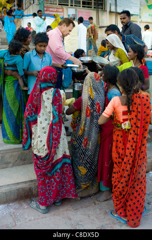

| Timeless Beauty |
| Timeless painting |
| Timeless Drawing |
On way timeless |
Timeless seeds |
Tell them why you love them. In some cases, this can literally be a list of the things you love about them and more importantly why you love these qualities or attributes.
Literally "count the ways" you love them, and list some of the reasons for your love.
Talk about how your life has changed since they became a part of it and why you are grateful for that.
Talk about the future, where your relationship will be going next
how you will be there to support and "show up" for each other. Talk about why the future together is exciting.
Reaffirm your love and commitment to them and how you will hold up your side of the relationship
[4]
Respect
WE all deserve Respect
Ever human being of whatever origin,of whatever station deserver respect
we must eact repect other even as we respect ourselves

| Respect |
Is |
How |
TO |
| Treat |
everyone |
Our poor people are great people a very lovable people they do'nt need pity and sympathy
they needour understanding love and they needour respect we need to tellthe poor that theyare
somebody by the same loving hand of God to love and be loved
Respect to me, is a way of showing someone that you think highly of them and well, respect them!
Respect is a very important part of life.
If a person is respected, it makes him fell good and in return, he or she respects you. Respect is important to me because if a person didn't respect anyone, he himself would not be admired, and over time, he would grow up to be a very rude and inconsiderate person
[5]
Happiness
it is something that you feel from within. In addition, true happiness comes from within yourself.
Happiness is basically a state of mind. Moreover,
it can only be achieved by being positive and avoiding any negative thought in mind.
| Everybody |
wants happiness |
in their lives |
As we now know that we can not buy happiness with money and there is no other shortcut to happiness. It is something that you feel from within.
In addition, true happiness comes from within yourself. Happiness is basically a state of mind.
Moreover, it can only be achieved by being positive and avoiding any negative thought in mind.
And if we look at the bright side of ourselves only then we can be happy.
True happiness means the satisfaction that you find worthy. The long-lasting true happiness comes from life experience, a feeling of purpose, and a positive relation
ship.
People nowadays are not satisfied with their relationship because of their differences and much other reason. But for being happy in a relationship we have to understand that there are some rules or mutual understanding that keeps a relationship healthy and happy.